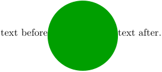
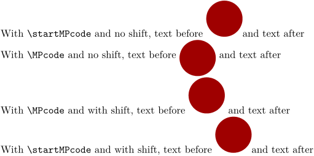

Contents
Summary
The command \MPcode is used for Metapost inline graphics.
Settings
| \MPcode{...}{...} | |
| {...} | metafun minifun extrafun lessfun doublefun binaryfun decimalfun mprun metapost nofun doublepost binarypost decimalpost simplefun |
| {...} | content |
Description
Similar to the environment \startMPcode but see the example.
\MPcode introduces an horizontal space after, and the bounding box of the graphic keep the drawing origine (more accurate description, and/or more explanation probably required).
It was introduced in 2010 to reduce needed calls with lua.
Source: https://mailman.ntg.nl/archives/list/ntg-context@ntg.nl/message/AIAWMGBFQQ5QPKNPOPDKFE4U3P4DZJDY/
But it doesn't behave exactly the same.
With \startMPcode :
-
\startluacode context("text before") context.startMPcode() context("fill fullcircle scaled 2cm withcolor darkyellow;") context.stopMPcode() context("text after.") \stopluacode
With \MPcode :
-
\startluacode context("text before") context.MPcode("fill fullcircle scaled 2cm withcolor darkgreen;") context("text after.") \stopluacode
- 
Examples
Example 1
-
With \tex{startMPcode} and no shift, text before \startMPcode fill fullcircle scaled 1cm withcolor darkred; \stopMPcode and text after With \tex{MPcode} and no shift, text before \MPcode{fill fullcircle scaled 1cm withcolor darkred;} and text after With \tex{MPcode} and with shift, text before \MPcode{fill fullcircle scaled 1cm shifted (0,0.5cm) withcolor darkred;} and text after With \tex{startMPcode} and with shift, text before \startMPcode fill fullcircle scaled 1cm shifted (0,0.5cm) withcolor darkred; \stopMPcode and text after
- 